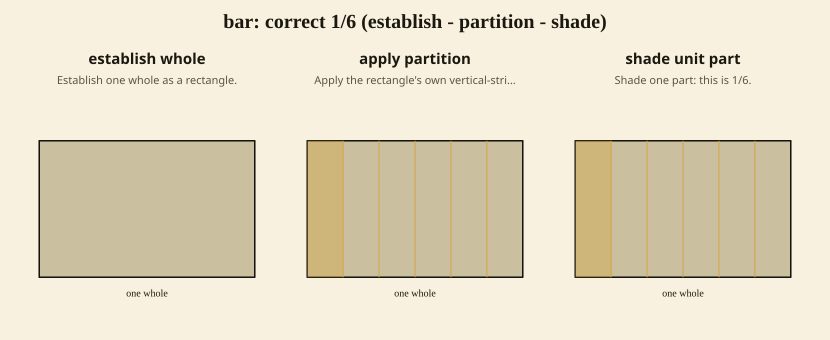
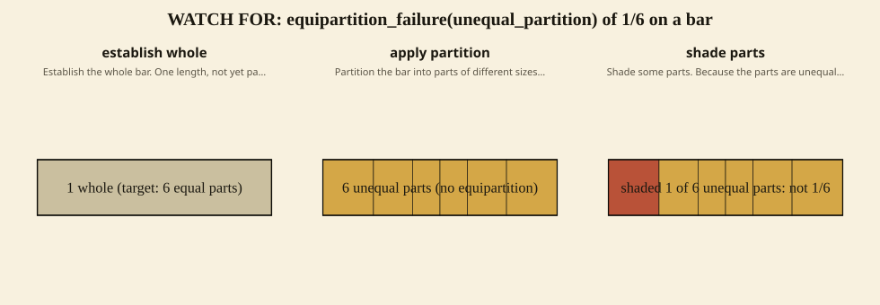
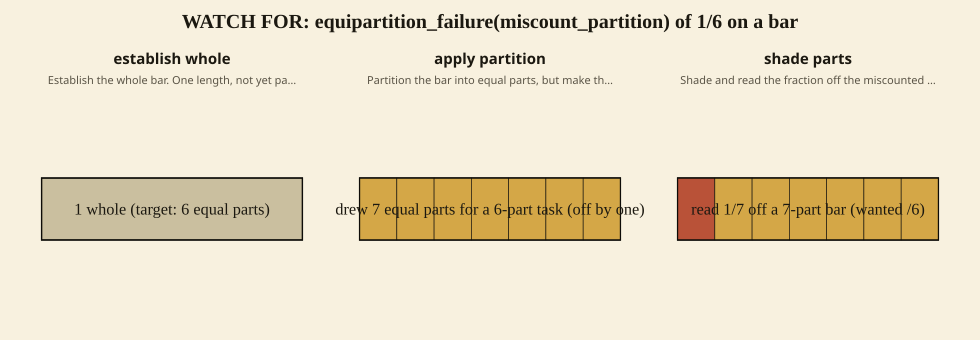
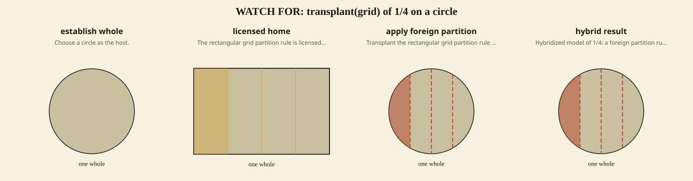
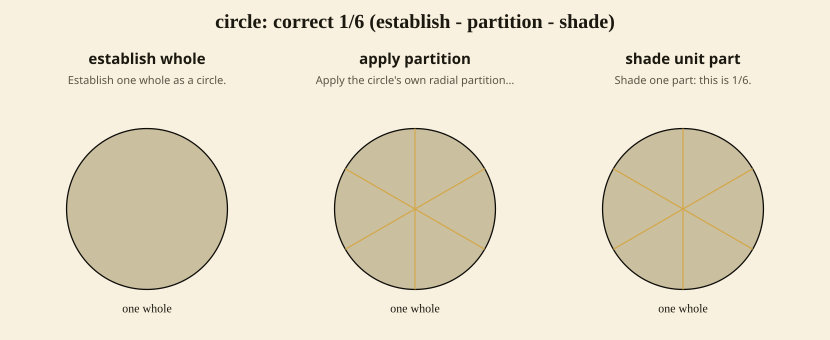
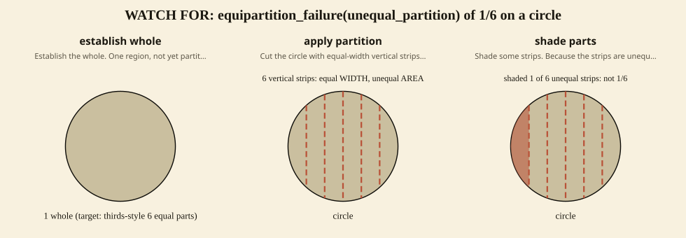
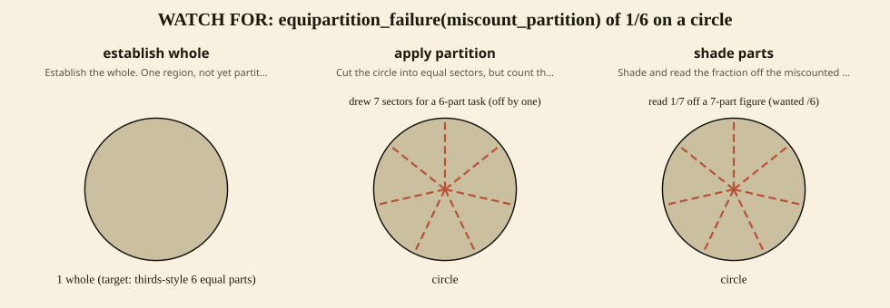

Standards: 3.NF.A.3.d Fractions: 1/4, 1/6
This is the monitoring chart for the lesson: the productive model for each of the lesson's fractions, beside the likely student-work deformations to watch for on each representation, drawn on the lesson's own fraction. The deformations are parametric: the same error rule regenerates for every fraction the lesson names. Each deformation is a labeled misconception, gated through the representation grammar's misconception lane — never an unlabeled productive diagram. Logic in curriculum/im/lesson_deformation_chart.pl; render projected through more-zeeman/render/drawer.js.









